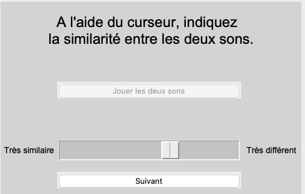

Audio examples and interactive demonstrations
Perceptual distortions in aided hearing-impaired hearing listening:
Consequences for Auditory Attention and Temporal Processing of auditory scenes
This website accompanies my thesis and provides audio examples, task instructions, and interactive demonstrations from its three experimental chapters.
Choose an experiment to go directly to its section.
Loudness and timbre
Listen to the sounds used in the loudness and timbre experiments (chapter 2).
Explore this section → 02Attention in two sound streams
Discover the target detection task and the changes introduced in the ignored stream (chapter 3).
Explore this section → 03Local-global processing
Listen to the melodies and compare their local and global pitch patterns (chapter 4).
Explore this section →Experimental part 01
Loudness and timbre
This section presents two experiments investigating loudness and timbre perception ( chapter 2 ). Explore the loudness experiment below, or jump to the timbre experiment.
Loudness experiment
In this experiment, listeners rated the loudness of 14 sounds with different timbral characteristics, each presented at multiple sound levels. The response interface and audio examples below illustrate the task and its stimuli.
The screenshot below shows the interface used to collect participants’ loudness ratings. After each presentation, participants selected the category that best described how loud the sound seemed. Each sound was presented at approximately 30 different levels to measure its loudness function. Participants could take a break before moving on to the next sound.

Response interface for the loudness experiment. English translations:
| French | English |
|---|---|
| Trop fort | Too loud |
| Très fort | Very loud |
| Fort | Loud |
| Moyen | Medium |
| Faible | Soft |
| Très faible | Very soft |
| Non perçu | Inaudible |
Instruction: “Indicate how loud the sound seemed to you.”
Listen to the sounds
Listen to the 14 sounds below. Each row groups sounds with the same spectral center frequency (fcs) and attack time (AT). The labels B1–B6, R1–R6, and FX1–FX2 correspond to those used in chapter 2.
B1
R1
FX1
B2
R2
B3
R3
B4
R4
B5
R5
FX2
B6
R6
Timbre experiment
This experiment investigated perceived differences in timbre. Participants listened to all 190 distinct pairs formed from the 20 sounds presented below and rated the timbral dissimilarity between the two sounds in each pair. Each pairs of sounds could be played up to twice per trial. The response interface is shown below.
Response interface

Listen to the sounds
Each row presents two versions of the same sound: the unprocessed version used in the normal-hearing condition (NH), on the left, and the version processed with both the hearing-aid and hearing-loss simulators (aHI*), on the right. The sounds were synthesized by varying four acoustic parameters: spectral center frequency (fcs), which controls brightness; amplitude-modulation depth (m), which controls roughness; attack time (AT); and the spectral-change parameter sdiff, which controls changes in the spectral envelope over time. The 20 sounds combined different random values of these four parameters. Young and older normal-hearing listeners (yNH and oNH) heard the NH stimuli. Participants in the simulated aided hearing-impaired condition (aHI*) heard stimuli processed with both simulators. Aided hearing-impaired listeners (aHI) heard stimuli processed with the hearing-aid simulator only (not presented here). Each participant completed the experiment in a single listening condition. In the experiment, the sounds were equalized in loudness and shared the same fundamental frequency and duration, so that participants could base their judgments primarily on timbre. Use the sorting buttons to arrange the sounds in ascending order of each acoustic parameter.
Loading sound parameters…
| Sound | NH | aHI* |
|---|---|---|
| Sound 1 | ||
| Sound 2 | ||
| Sound 3 | ||
| Sound 4 | ||
| Sound 5 | ||
| Sound 6 | ||
| Sound 7 | ||
| Sound 8 | ||
| Sound 9 | ||
| Sound 10 | ||
| Sound 11 | ||
| Sound 12 | ||
| Sound 13 | ||
| Sound 14 | ||
| Sound 15 | ||
| Sound 16 | ||
| Sound 17 | ||
| Sound 18 | ||
| Sound 19 | ||
| Sound 20 |
Experimental part 02
Attention in two sound streams
This section presents the selective attention task from chapter 3. Participants detected target changes in one sound stream while ignoring a second stream. Read the task instructions, then try the demonstration below.
Task instructions
Read the original French instructions or their English translation. Use the arrows to move through the three slides and play the audio examples.
Experimental part 03
Local-global processing
This section presents the local-global task from chapter 4. Participants compared two melodies at two temporal scales: the local level, defined by the pitch pattern within each sound, and the global level, defined by the pitch pattern across the three sounds forming each melody. Read the task instructions, then try the demonstration below.
Task instructions
Explore the six instruction slides used at the beginning of the experiment. Choose the original French version or the English translation, and play the audio examples.